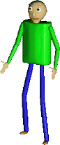

Reconocer Sonidos
Reliza diversos sonidos como aplausos, chasquidos, silvar, o el sonido de la engrapadora tambien reconoce la
falta de sonido y mira lo que pasaa



VALORA RESPETA A TUS VECINO TAL VEZ MAÑANA NECESITES SU WI-FI desarrollado por su amigo Alonso